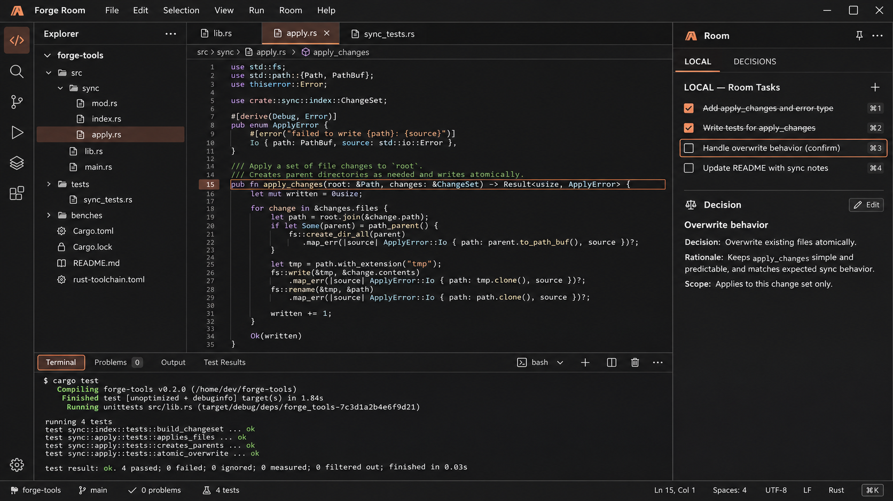
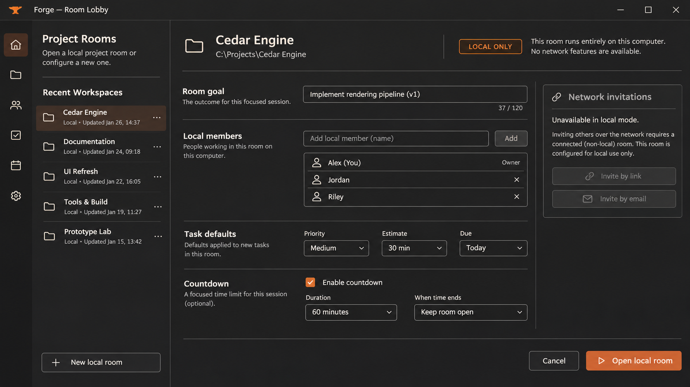
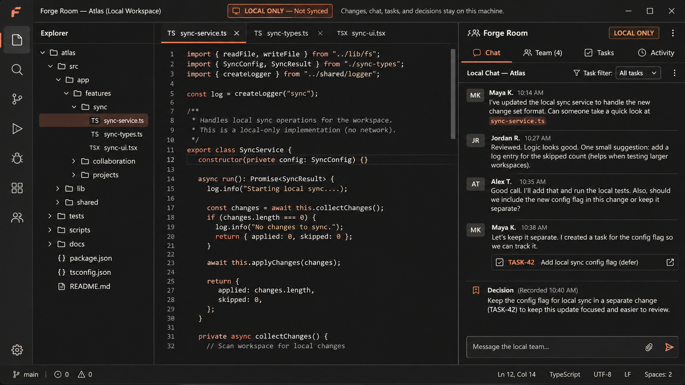
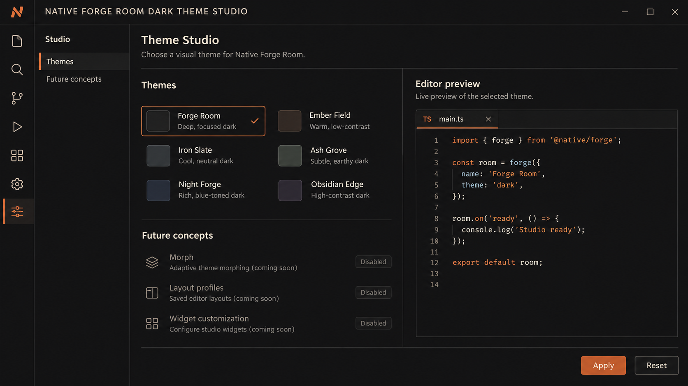
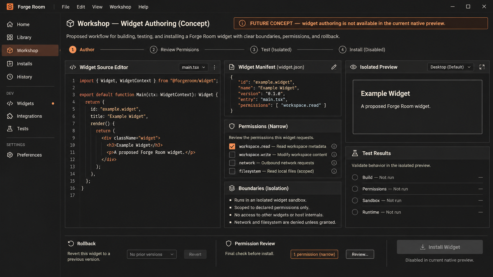
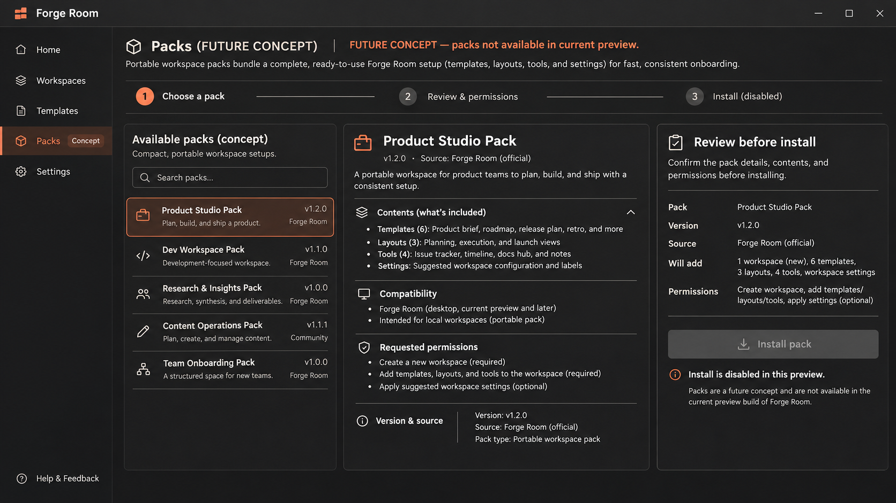
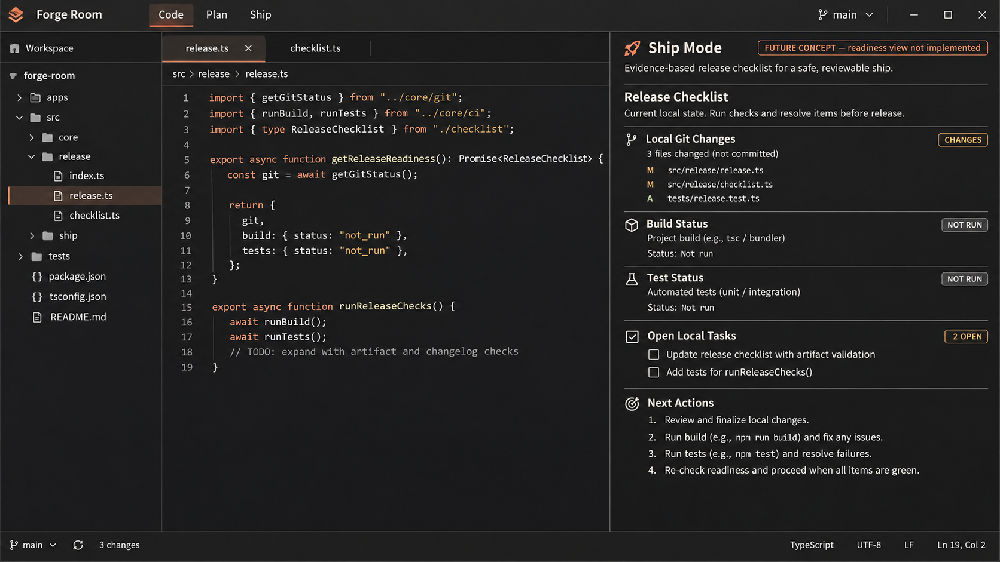
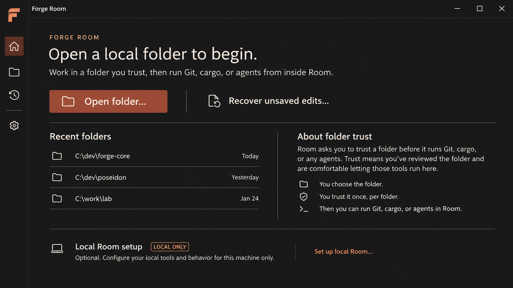

Forge Room · Redesign concepts
01 · Main workspaceEditor-first layout
02 · LobbyLocal room setup
03 · CollaborationLocal chat and decisions
04 · StudioTheme preview
05 · WorkshopFuture concept
06 · PacksFuture concept
07 · Ship ModeFuture concept
08 · OnboardingOpen, trust, recover